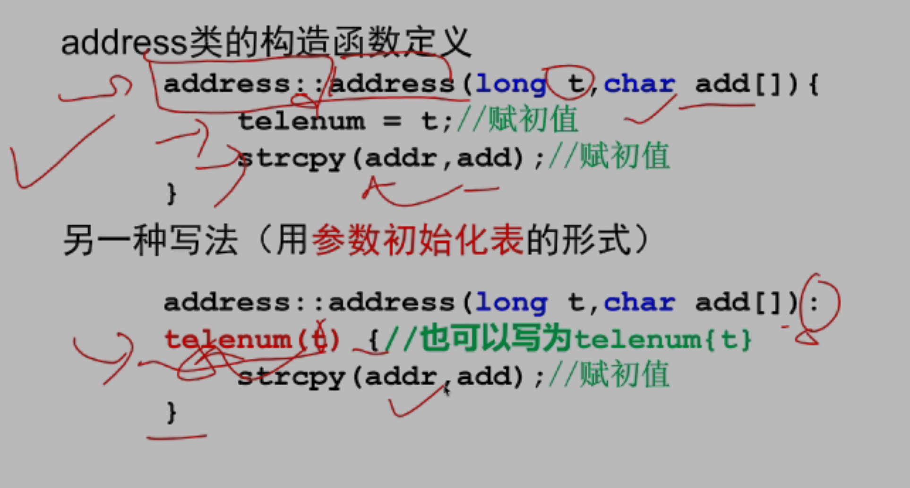
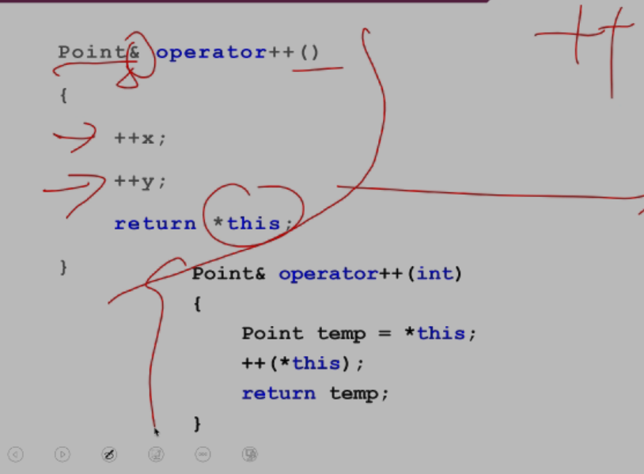
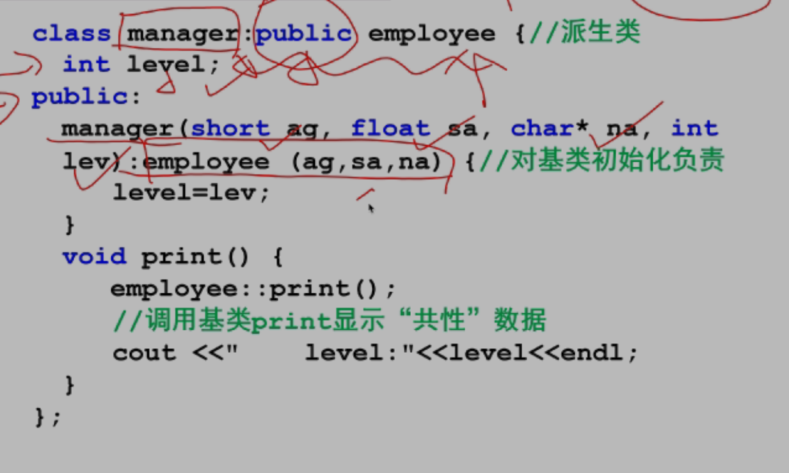
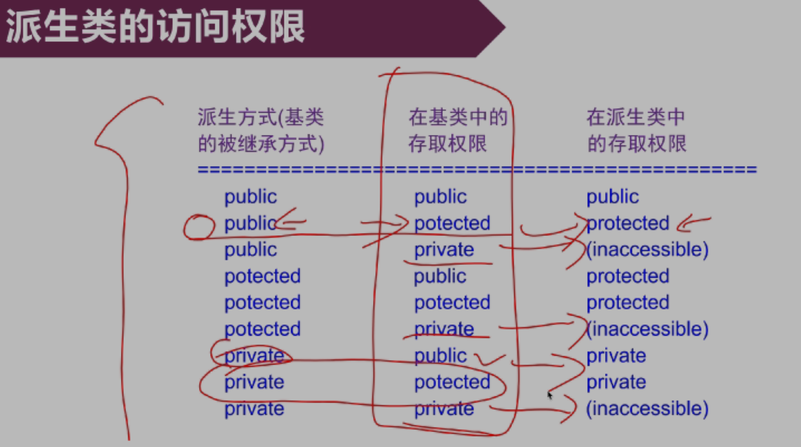
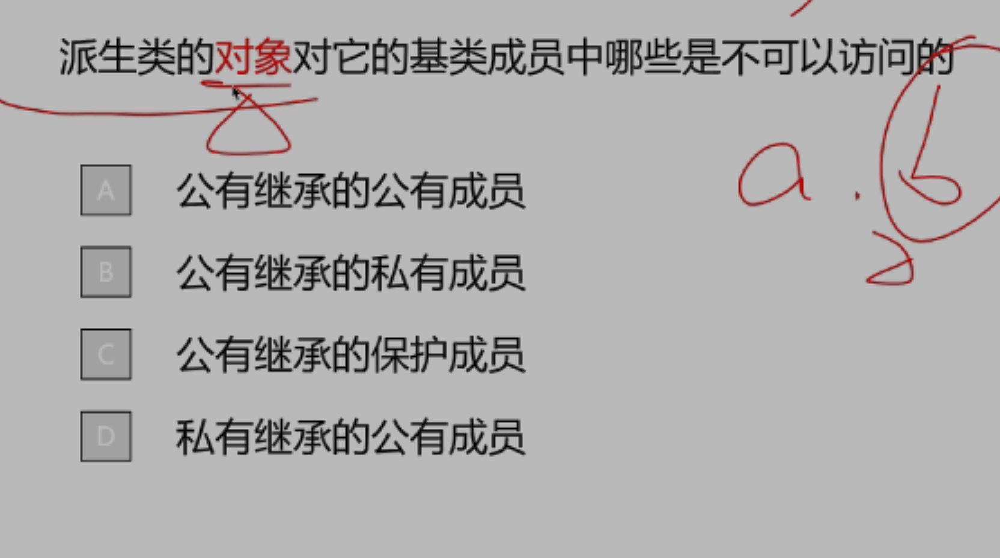
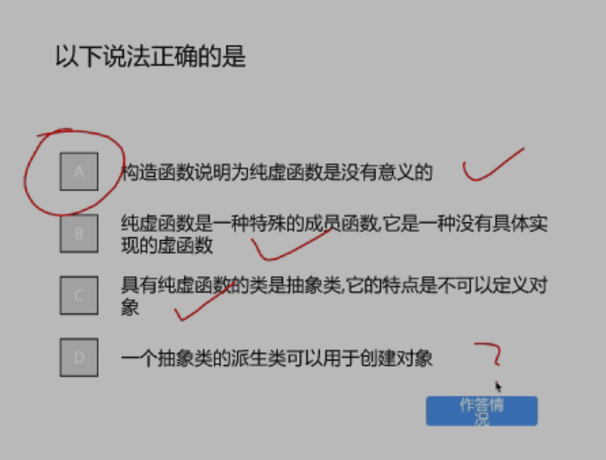
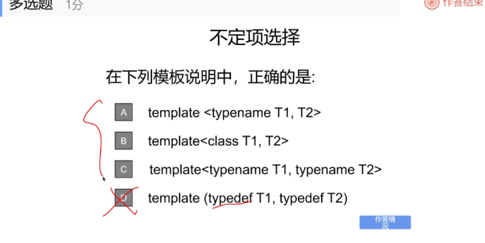
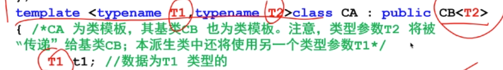

- 一个类里可以有该类的指针，但是不可以有该类，与内存有关，当实例化对象时，指针所占大小是确定的，为 4 个字节，而该对象就不确定了
- 公有函数 接口 传递消息，封装性， 封装的数据
- 类的定义只是一个框架 ，对象创建时才占内存对象 实例化
- 使用引用时要为引用赋初值
类和对象 part2
不考察 指向成员的指针，每个对象维护自身的成员
对象初始化 ：构造函数
- 根据数据成员访问控制方式 公有： 一般数组 不常用 常用： 构造函数：
- 无返回类型，
- 字符数组的首地址 为一个指针 ，传入的参数 address(long t, char add[])
strcpy(,add)调用函数赋初值

part 3
include <>和“”的区别
part 5
赋值运算符重载
赋值 输入输出
返回本身 return *this： 可作为左值
- 引用传参 ，减少内存转移
- 加 const 保证不会改变实参的值
- 以引用的格式返回自身对象，可作为左值参与运算
- 为成员函数而不是友元函数
了解：后缀加加 临时对象保存原值，返回临时对象以引用形式返回 原值参与运算，自身加 1

链表
继承与多态 paet1
共同特征 基类
构造函数初始化 字符串指针开辟空间 拷贝

- final 最后的类不可再派生

去更严格的派生类成员根据访问权限分为四类 多了一个不可访问的成员

保护也不可访问按继承的顺序初始化，按照声明的顺序
part2
核心：七八两章
属性成员对位赋值
派生类的拷贝构造函数
用一个已经存在的对象创建一个新的对象
- const
- & 引用
在类内进行访问： this 指针 自己 ；相同类 其他对象的属性成员，私有也可 只限制类定义中的成员函数，而不限制该函数访问的是哪个对象的属性成员
派生类构造之前先构造基类
派生类中可以使用 using 关键字显式地继承基类地构造函数，无参构造函数除外默认调用
using box::box继承所有有参的构造函数
- 初始化列表里的顺序不重要，只起到参数匹配的作用，还是看定义中继承的顺序以及声明的自定义类对象的顺序
友元的继承
基类的友元不继承 一样的东西可以访问，权限一样
Note
赋值：两边的对象都存在 拷贝构造
派生类对象是特殊基类对象 兼容
继承

cherno : 当在基类声明是 virtual 函数时，自动创建一张虚函数表，如果有覆盖，就相应的调用去找
第九章
重点 七章八章
模板 两到三周 函数 抽象出类型参数
-
函数调用时，有特殊到一般，先找有没有其他的普通函数重载，然后实例化模板为相应类型
-
char * a,可以为字符串常量，存在内存里，首地址其实存的是
- 隐式转换先指明类型参数是什么数据类型
func<float>(2,3.4)
typedefine 起别名
类模板
先指定实参
模板类外声明的函数：1.加上模板头 2.函数名 前面修饰的类名参数表提供对应的类型参数 及使用类型参数也可使用普通参数
静态成员：共享
类模板特例子版本，一个类有很多成员函数 对有必要的进行处理自定义的类型之类 类模板显示指明 而函数模板编译器自己推断 数据类型不匹配报编译错误，程序改编译错
区分前++和后++ 设有一个 Counter 类：
cpp 复制 编辑 class Counter { private: int value; public: Counter(int v = 0) : value(v) {}
// 前缀自增
Counter& operator++() {
++value;
return *this;
}
// 后缀自增
Counter operator++(int) {
Counter temp = *this;
++value;
return temp;
}
int getValue() const { return value; }
}; 🔍 使用区别 前缀自增（++i）：
先将对象的值增加，然后返回增加后的对象。
返回类型通常为引用（ClassName&），允许作为左值使用。 Old Times Documentation 博客园 +1 CSDN 博客 +1
后缀自增（i++）：
先返回对象当前的值，然后将对象的值增加。
返回类型通常为值（ClassName），返回的是增加前的副本。 CSDN 博客 +2 CSDN 博客 +2 Old Times Documentation +2
⚠️ 注意事项 后缀自增由于需要返回原始值的副本，可能涉及额外的对象拷贝，效率略低。
在重载后缀自增时，int 参数仅用于区分函数签名，实际并不使用。
四种情况： 基类派生类 01 11（不使用） 11*（使用类型参数指明的的数据类型） 12 注意写法 后面只写名字不写关键字

标准模板库：六大部件 容器：装数据的，动态数组，向量随着需要申请新的空间，自己完成内存的管理， 迭代器：指针 数组下表 算法 分配器：管理内存 适配器:类型适配 仿函数：对象的实现形式；算法
链表对内存的利用率最高碎片
类模板先实例化为模板类 vector<int> vec1;
vetor1.end()是指整个数组的最后一项的后一个
io
-
stream 为文件和内存建立关联
-
预定义的流类对象：
extern cin cout cerr clog
格式控制标志位 一些成员函数
标志位：一堆二进制序列
setf 设置某一个标志位
flags 设置所有标志字？ 以 long 类型返回
setf 两个参数的用法
掩码，basefiled ?16 进制
width 设置宽度只对后一位有效
没有设置宽度是右对齐的格式
IOMANIP
输入输出流
输入输出流函数
- put(),输出一个字符
ostream& put(char ch) - get(),提取一个字符
istream& get(char& ch) - getline(),读入一行
getline(char* pch,int n,char delim='\n')
read()和 write()读写二进制文件
double d = 1.1;
ofstream outfile("asc.txt",ios::binary);
outfile.write((char *)&d,sizeof(d));
outfile.close();
对数据文件进行随机访问
-
seekg()和 seekp()：定位输入文件流对象和输出文件流对象的文件指针
-
将文件指针从参照位置 origin 移动 Offset 个字节，
seekg(long offset,seek_dir origin=ios::beg) - ios::beg/cur/end
- 下述程序的功能是把文件 source.txt 中的数据全部写到二进制文件 destination.bin 中，请完善该程序；
#include<iostream>
#include<fstream>
using namespce std;
void main(){
int x;
ifstream input("source.txt");
ofstram output;
while( ){
;
;
;
output.close();
input>>x;
}
input.close();
}
1. `!input.eof()`
2. `output.open("destination.bin",ios::binary|ios::app)`
3. output.write((char *)(&x),size of(x))
#include <iostream>
#include<fstream>
#include<string>
#include<algorithm>
#include<vector>
using namespace std;
class Student{};
//比较函数，按分数降序，同分按姓名升序；
bool compareStudents(const Student& a,const Student &b){
if(a.score!=b.score){
return a.score>b.score;
}
return strcmp(a.name,b.name)<0;
}
//比较函数：按往年最低分降序
bool compareDepartments(const Department&a,const Department&b){
return a.lowest_score>b.lowest_score;
}
void Get_Student_Info(Student stu[]){
ifstream file("Student.txt");
if(!file.is_open()){
cerr<<"无法打开该文件"<<endl;
exit(1);
}
for(int i=0;i<8;i++){
string name,choice1,choice2,choice3;
int score;
file>>name>>score>>choice1>>choice2>>choice>>3;
//分配内存并复制数据
stu[i].name=new char[name.size()+1];
strcpy(stu[i].name,name.c_str());
stu[i].choice1=new char[choice1.size()+1];
strcpy(stu[i],choice1,choice1.c_str());
stu[i].score=score;
stu[i].dept=nullptr;//初始未分配专业
}
file.close();
}
void Get_Dept_Info(Department dept[]){
ifstream file("Department.txt");
if(!file.is_open()){
cerr<<"无法打开该文件"<<endl;
exit(1 );
}
for(int i=0;i<5;i++){
string deptName;
int count,lowest_score;
file>>deptName>>count>>lowest_score;
//分配内存并复制数据
dept[i].deptName=new char[deptName.size()+1]
strcpy(dept[i].deptName,deptName.c_str());
...
}
file.close();
}
void Student_Dept(Student stu[],Department dept[]){
//1. 按分数排序学生
sort(stu,stu+8,compareStudents);
//2.第一轮录取：按志愿
vector<Student*>unassigned;//未被录取的学生
for(int i=0;i<8;i++){
bool admitted=false;
//检查第一志愿
for(int j=0;j<5;j++){
if(strcmp(stu[i].choice1,dept[j].departName)==0){
if(dept[j].curr_count<dept[j].count){
stu[i].dept=dept[j].deptName;
dept[j].curr_count++;
admittde=true;
break;
}
}
}
//同理，检查二三志愿
//如果三个志愿都没有被录取，
if(!admitted){
unassigned.push_back($stu[i]);
}
}
//3.第二轮录取，调剂录取
//按专业往年最低分排序
sort(dept,dept+5,compareDepartments);
for(Student*s:unassigned){
for(int j=0;j<5;j++){
if(dept[j].curr_count<dept[j].count){
s->dept=dept[j].deptName;
dept[j].curr_count++;
break;
}
}
}
//4.输出到二进制文件
ofstream outfile("StudentDept.bin",ios::binary);
if(!outfile.is_open()){
cerr<<"无法创建studentdept.bin文件"<<endl;
exit(1);
}
for(int i=0;i<8;i++){
outfile.write(stu[i].name,strlen(stu[i].name)+1);
outfile.write((char *)(&stu[i].score),sizeof(int));
outfile.write(stu[i].dept,strlen(stu[i].dept)+1)
}
outfile.close();
}
}